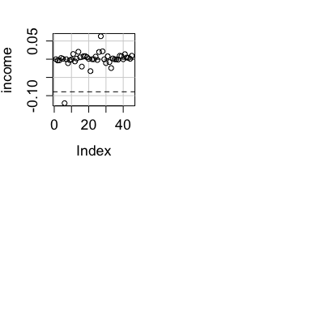
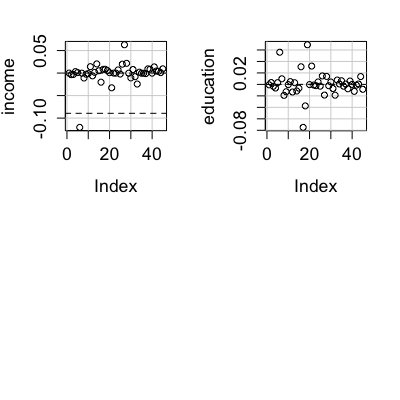
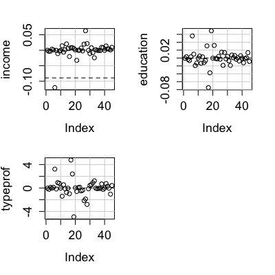
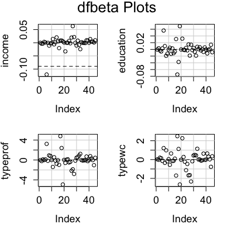
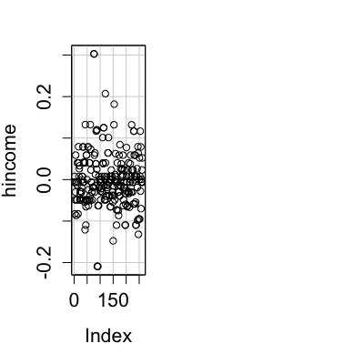
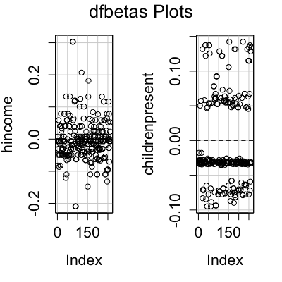

dfbetaPlots(model, ...) dfbetasPlots(model, ...) dfbetaPlots(model, terms = ~., intercept = FALSE, layout = NULL, ask, main, xlab, ylab, labels = rownames(dfbeta), id.method = "y", id.n = if (id.method[1] == "identify") Inf else 0, id.cex = 1, id.col = palette()[1], col = palette()[1], grid = TRUE, ...) dfbetasPlots(model, terms = ~., intercept = FALSE, layout = NULL, ask, main, xlab, ylab, labels = rownames(dfbeta), id.method = "y", id.n = if (id.method[1] == "identify") Inf else 0, id.cex = 1, id.col = palette()[1], col = palette()[1], grid = TRUE, ...)
lm or glm.
~. is to plot against all terms in the model with the exception of an intercept. For example, the
specification terms = ~.-X3 would plot against all terms
except for X3. If this argument is a quoted name of one of the terms, the
index plot is drawn for that term only.
FALSE.c(1, 1) or c(4, 3), the layout
of the graph will have this many rows and columns. If not set, the program
will select an appropriate layout. If the number of graphs exceed nine, you
must select the layout yourself, or you will get a maximum of nine per page.
If layout=NA, the function does not set the layout and the user can
use the par function to control the layout, for example to have
plots from two models in the same graphics window.
"Index".TRUE, ask the user before drawing the next plot; if FALSE, the default, don't ask.
plot, points, and showLabelsid.n=0 for labeling no points. See
showLabels for details of these arguments.
palette.TRUE, the default, a light-gray background grid is put on the
graphThese functions display index plots of dfbeta (effect on coefficients of deleting each observation in turn) and dfbetas (effect on coefficients of deleting each observation in turn, standardized by a deleted estimate of the coefficient standard error). In the plot of dfbeta, horizontal lines are drawn at 0 and +/- one standard error; in the plot of dfbetas, horizontal lines are drawn and 0 and +/- 1.
NULL. These functions are used for their side effect: producing
plots.
Fox, J. (2008) Applied Regression Analysis and Generalized Linear Models, Second Edition. Sage.
Fox, J. and Weisberg, S. (2011) An R Companion to Applied Regression, Second Edition, Sage.





